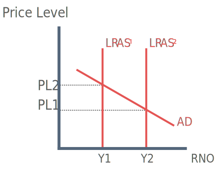

What are Supply-side Policies?
Supply-side policies aim to improve the productive potential of the economy. This is done by increasing the productivity of factors of production (Land, labour and capital). It is generally accepted that supply-side policies are the key to achieving sustained growth without causing a rise in inflation.
Supply-side policies may include:
Improving human capital through education and training
Increasing occupational and geographical mobility of labour
Encouraging entrepreneurialism
Increasing spending on research and development by firms
Effect of Supply-side Policies

Successful supply-side policies have the effect of shifting the long-run aggregare supply (LRAS) curve outwards. This indicates that there has been an increase in the potential output of economy.